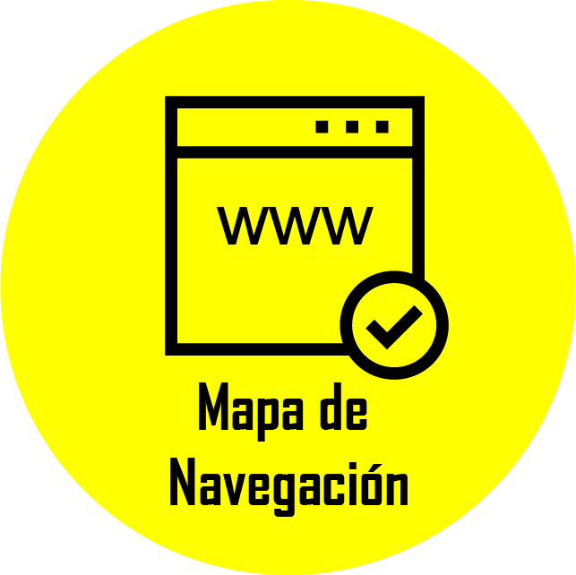
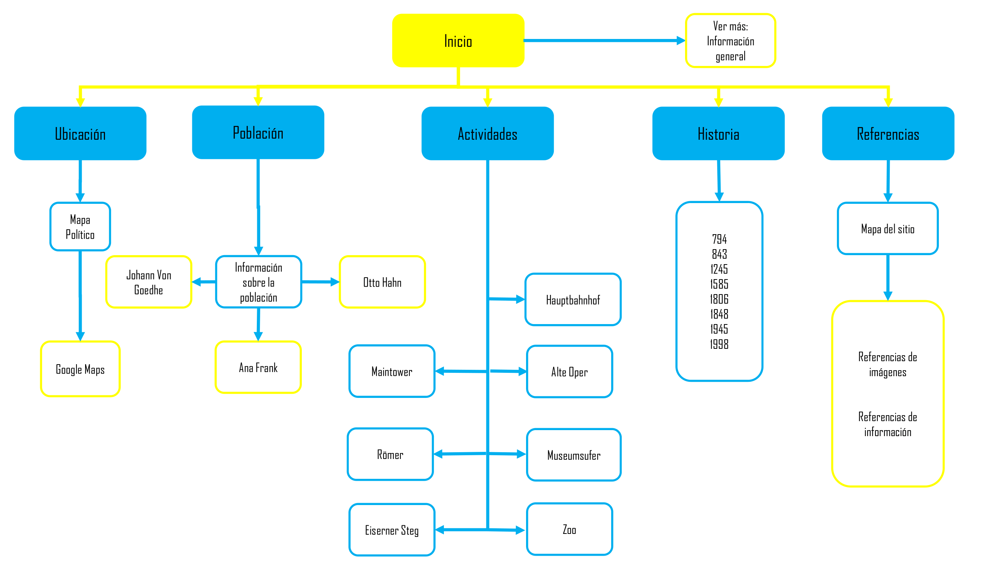

Home
Ubicación
Población
Actividades
Historia
Referencias

Referencias
Personajes famosos.
Historia de Frankfurt 1
Historia de Frankfurt 1
Ubicación
Población
Actividades
Volver
Referencias de Imagenes.
Background Home
Background Ubicación
Background Población.
Background Actividades.
Background Historia.
Background Referencias
Ana Frank
Otto Hahn
Wolfgang von Goethe
Hauptbahnhof 1.
Hauptbahnhof 2.
Alte Oper 1.
Alte Oper 2.
Main Tower 1
Main Tower 2
Römer 1
Römer 2
Eiserer Steg 1.
Eiserer Steg 2.
Museumufer 1.
Museumufer 2.
Zoologico 1
Zoologico 2
año 794
año 843
año 1245
año 1356
año 1585
año 1806
año 1848
año 1945
año 1998
Volver
Mapa de Navegacion.

Volver